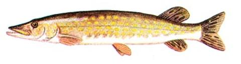

|  |
|
Pike is a fish ( Esox lucius). It's quite common in Poland (where I live) and much valued by fishermen and gourmets.
In Polish, pike is szczupak, pronounced (approximately) as SHCHOO-pahck.
No, I don't do fishing, nor am I a fish gourmet.
Pike is a powerful and easy object-oriented, interpreted programming language. This is the Pike these pages are (going to be) about.
No, I did not create Pike -- Hubbe did. I just happen to like it. So, I made these pages (rather, am in the process of doing so).
Comments are invited.
Accessed: by
Last modified: